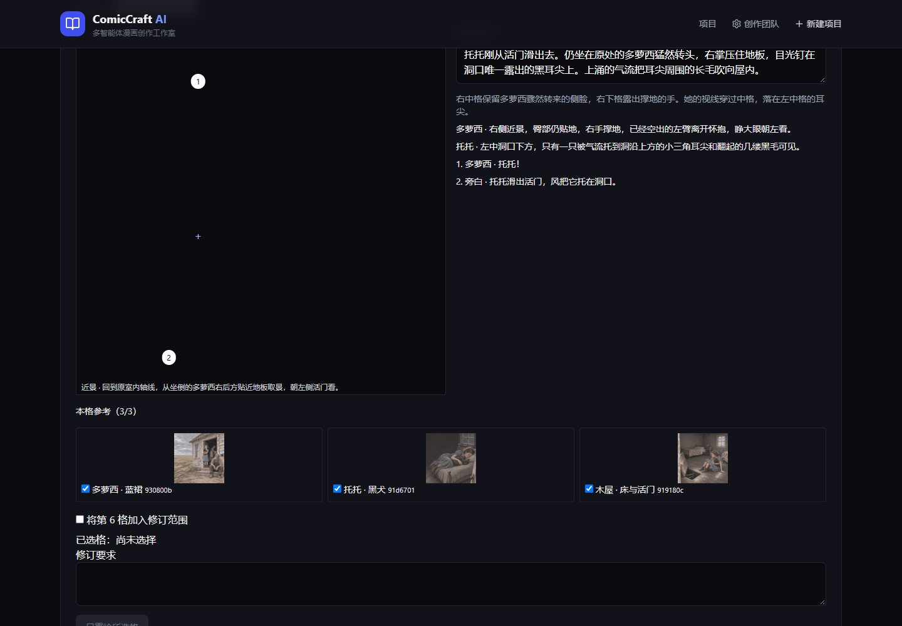
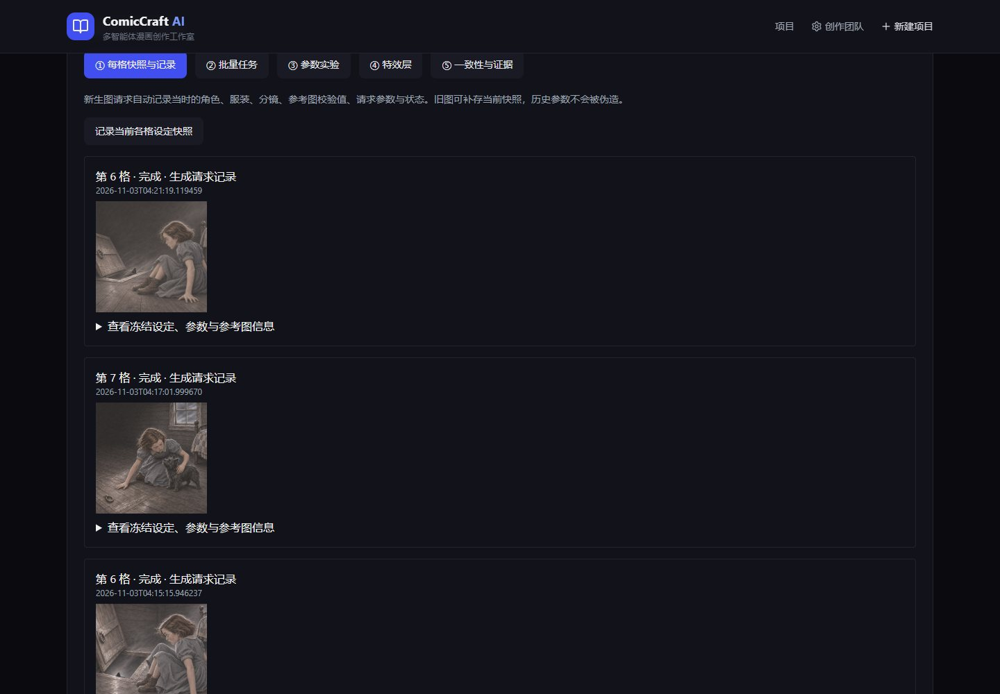
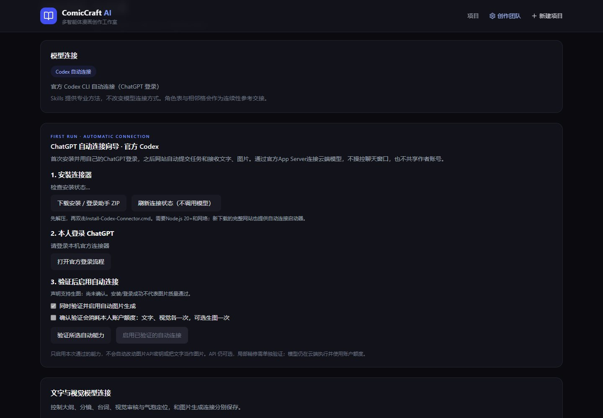

OPEN SOURCE · COMIC WORKSPACE
让故事，成为漫画。
ComicCraft AI 将角色、分镜、台词、画面与排版组织成可修改、可回退的创作流程。
公开演示包含可阅读漫画和可操作的气泡样例。完整创作网站在本机运行，可选择官方 ChatGPT 自动连接器或模型 API。
从初稿，到可继续修改的成稿
六个分工 Agent剧情、分镜、台词、生图、审核、排版，明确职责与结构化交接。
画面内气泡编辑拖动位置、尺寸和尾尖，切换对白、独白与旁白。
局部蒙版精修圈选失真区域、比较候选、确认采用，并保留原版。
素材生产工作台设定快照、批次、参数候选对比与非破坏特效。
成稿预览：《我们得谈谈五十五号》
改编自 qntm 在 SCP Wiki 连载的《反模因部不存在》第一篇。全章采用不等分版式，包含嵌入特写与画内气泡。
官方Codex自动连接
安装连接器并使用自己的ChatGPT登录，可自动返回文字与附图任务结果。API 模式也可选用。首次由本人登录并验证后启用；本机已实测文字、视觉与生图。逐格保存进度，恢复时只补未完成或已变化内容。
安装、实测与边界
从小说，改编成漫画
导入TXT/Markdown或粘贴正文，按片段设定改编方式与篇幅，先提取角色卡并审阅大纲，再审阅分镜草图与对白。可以锁定角色、场景和道具参考，按格绑定后开始绘制。原著与旧作品分开保存，支持回退；当前按片段逐章制作。
小说改编指南
完整应用功能演示
截图采自本机完整应用。点击截图查看原图。
打开无需安装的气泡编辑演示 · 完整操作手册
小说导入与改编

导入原著、预览分段，并为改编章节设定格数和保留事实。
视觉参考与分镜草图

按格选用角色、场景和道具参考，预览动作、嵌入小格和对白留白。
画内气泡编辑

在原画上移动气泡、改字、缩放并调整尾巴，再重新合成成稿。
圈选局部精修

圈定需要修改的区域，比较候选与原图后决定是否采用。
素材生产工作台

查看逐格生成记录、批量任务、参数实验与特效层。
创作团队与模型设置

查看角色分工与知识卡，分别管理文字、视觉和图片连接。
专业知识与第一次创作
六个 Agent 配备 24 张原创知识卡，按任务检索导演分镜、对白、连续性与排版方法。每张卡提供来源定位、适用限制和原创正反例；生成任务冻结知识快照。项目提供有/无知识建议的对照记录入口，生成质量提升仍待实测。完整应用首页可导入六格可编辑示例，不发起模型调用，并检查本机环境。
资料调研台账 · 检索回归与效果边界
文字与图片，分别使用自己的模型
在设置中独立选择 官方 ChatGPT 自动连接器或 OpenAI 兼容 API，填写文字、视觉和图片模型及各自密钥。完整应用在本机运行，密钥保存在本机后端；不提供免费模型额度。
模型连接说明 · English guide · 路线图
本机启动，保留创作过程
需要 Python 3.11+、Node.js 20+ 和 Git。Windows 可运行 start.ps1，默认地址 http://127.0.0.1:8000。
完整操作手册 · 架构与能力边界
当前未提供公网身份认证和多租户隔离。不要将完整后端直接开放到公网。参数实验中的风格与尺寸是提示词约束，不是已验证的 seed 或采样步数。